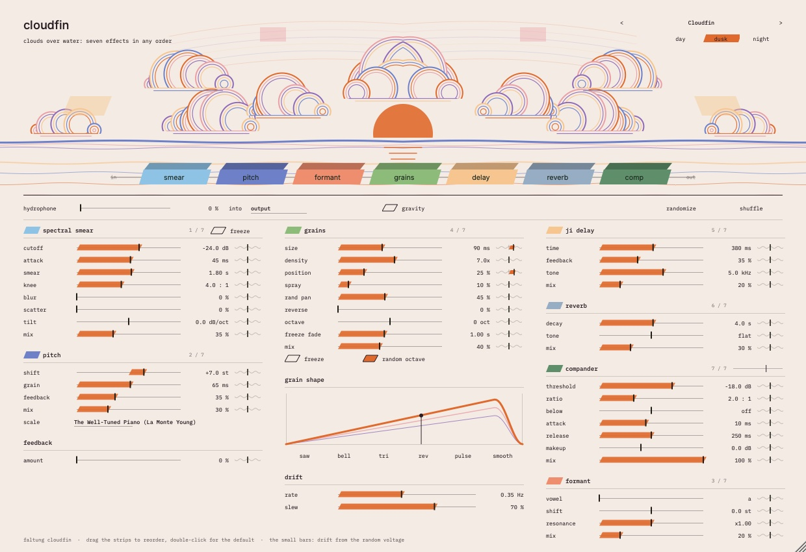
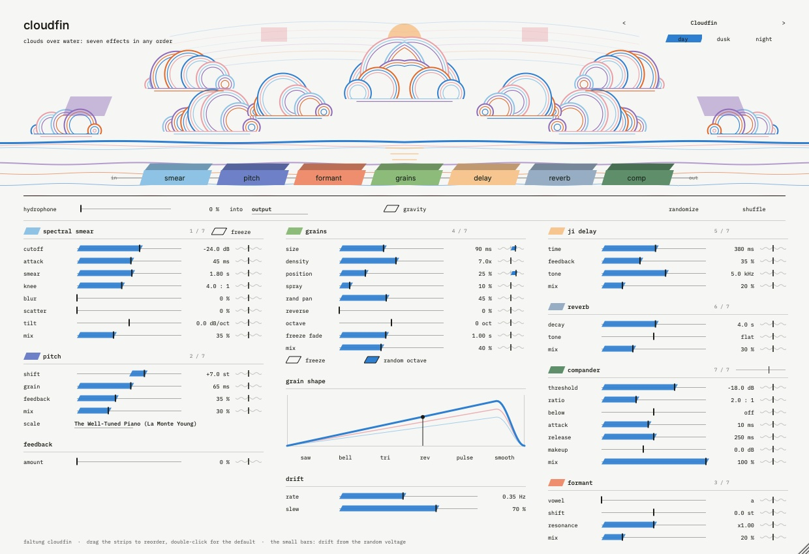

part of faltung · manual, version 1.3.0
Cloudfin is a dreamy, floating multi-effect, after a recurring dream of clouds heaped over calm water with light shining through them. It is part of the faltung series and drawn the way the rest of it is: the clouds and the water are stacked coloured lines on a flat ground, as on Oval's sleeves, mirrored about the centre of the window; the effects are snd's folded paper strips; the controls are faltung's slanted bars. Seven effects run one after another, in any order you like, with a feedback loop around them all and a slow random drift that can move every control on its own.

Every control is a faltung row: its name, a slanted bar and its value. Drag sideways (or up and down) to change it; hold shift for fine moves, double-click to put it back where it started, or use the mouse wheel. Each effect has a mix, and an effect with its mix at zero is out of the way.
After each row sits a short wavy bar, its drift amount (see below). The window can be resized from its bottom-right corner.
The row of folded paper strips across the water is the signal path, from in to out: smear, pitch, formant, grains, delay, reverb, comp. Drag a strip along the row to move that effect somewhere else in the chain. Shuffle (on the line under the picture) picks a random order, and double-clicking the strips puts it back. Every change crossfades through a short dip, so it never clicks, and the order is saved with your session.
Each section's header has a swatch in its strip's colour and its place in the chain (3 / 7), so you can always see which effect hears which.
The sound is split into hundreds of frequency bins. Below the cutoff each bin fades away, and whatever gets through rings on for the smear time, so the sound melts into long, smooth tones. Attack sets how quickly an opening bin swells up and knee how gently the bins below the cutoff fade. Blur smooths the smeared spectrum across neighbouring bins, scatter throws the phases about until tones dissolve into breath, and tilt leans the whole thing darker or brighter.
Freeze (in the header) holds the spectrum exactly as it is, for as long as it's on; hatching beside it grows as the freeze takes hold.
Shift moves the sound up or down, snapped to the scale chosen in the last row of the section. Grain sets the size of the shifter's window (short is glassy, long is smooth) and feedback sends the shifted sound round again, so it climbs or falls a step at a time.
A singing throat. Vowel glides through a, e, i, o and u, shift moves the throat up or down without changing the pitch, and resonance makes the vowel sharper and more whistling.
Cloudfin keeps the last four seconds on a live tape and plays it back as grains. Size and density set how long each grain is and how many overlap. Position picks where on the tape they read from and spray scatters them around it. Rand pan spreads them across the stereo field, reverse flips some of them backwards and octave moves them up or down (or let random octave choose for each grain).
Draw the shape of a grain in the grain shape box with the mouse, or pick one of the ready shapes underneath it; a dot rides along it. Freeze holds the tape still and freeze fade sets how slowly it slides in and out of the freeze.
A stereo delay with three taps a side, hard-panned left and right. The taps are tuned in just intonation to the note the pitch shifter lands on, so the echoes form a chord with it. Time scales them all, feedback sets how long they repeat and tone darkens them.
Decay sets how long the space rings. Tone runs from a lowpass (dark, below the middle) to a highpass (airy, above it).
A compressor that can also lift quiet sounds. Threshold and ratio work as on any compressor, with attack, release and makeup. Below acts on everything under the threshold: lift it (−) and quiet tails swell up, which makes feedback bloom; sink it (+) and the sound dries out. The bar in the section's header shows how much it's turning the sound down (left of the mark) or up (right).
Amount takes the end of the chain back to its start, so the whole of Cloudfin can ring on by itself. It is level-riding and tamed so it sings without blowing up.
Each control has its own slow random voltage. The short wavy bar after a row is how much of it reaches that control: drag it right (+) and the voltage moves the control up, left (−) and it moves it down, leave it at the centre mark (or double-click it) and the control stays still. A hollow tick on the row's bar shows where the control is right now. Rate sets how fast the voltages wander and slew how smoothly they glide.
The presets are at the top right: < and > step through them, and clicking the name opens the list. At the bottom of the list, save this as a preset... keeps everything as it is now under a name of your choosing; your own presets then appear in the menu under yours, and show the presets folder opens where they are kept (they are ordinary files, so you can copy, rename or delete them there). Randomize makes a new patch with every control somewhere new. The pitch section's scale picks the scale that the pitch shifter and the JI delay follow, from Western modes to ragas, maqams and just-intonation tunings.
Hydrophone, on the line under the picture, plays a recording of moving water: drag it to set how loud it is (double-click to switch it off). Into sends it to the output, on top of everything, or the input, so it goes through all the effects with your sound.
Day, dusk and night under the presets change the light: a pale ground with blues and pinks, a warm ground with oranges and lilac (the default), or the dark ground of the series with pale lines and a full moon. It's saved with your session. The clouds breathe with the drift and the water swells with the sound.

Turn on gravity (on the line under the picture) and the clouds fall into the sea: they splash, the water rises and rocks, and the clouds float on it. The sloshing is in the sound too. Turn it off and they float back up into the sky.
---
Back to the README · part of faltung